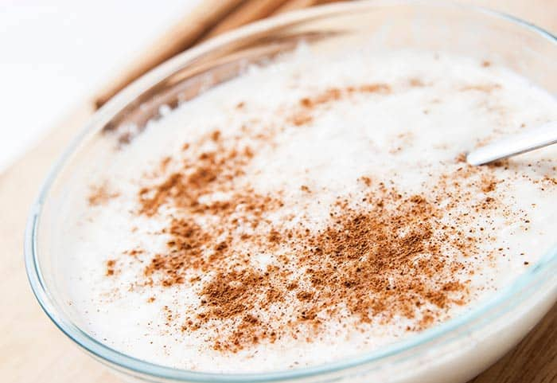

Arroz con Leche
Fecha 20-05-2019

El arroz con leche es un postre típico de la gastronomía de múltiples países hecho cociendo lentamente arroz con leche y azúcar. Se sirve frío o caliente. Se le suele espolvorear canela, vainilla o cáscara de limón para aromatizarlo.
El arroz con leche tiene orígenes muy antiguos en Asia y se difundió a través de Europa y África. A partir del siglo XV tras la colonización se exportó a América debido al comercio y población europea que emigraba al territorio americano
ruby88
Excelente información, ¿Tendrán la receta?
hector_j
¿Tendran más información de este tipo de recetas?